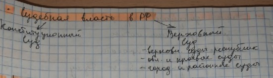

Зачет по праву
Конституция
- основополагающий учредительный политико-правовой акт, закрепляющий политической силой права и свободы человека и гражданина, определяющий форму правления и государственного устройство, учредительному органу государственной власти. Имеет высшую юридическую силу.Конституционное право
- отрасль права, представляющая собой совокупность юридических норм определяющих форму правления и государственной-территориальное устройство, формулировки и взаимоотношения высших органов государственной власти, права и обязанности граждан.Принципы политического права:
- Республиканская форма правления;
- Признание народа источником власти;
- Приориет и нерушимость прав и свобод человека и гражданина;
- Разделение властей;
- Федерализм.
Источники политического права:
- Конституция РФ 1993г.;
- Федеральный конституционный закон "О референдуме", "О конституционном суде", "О судебной системе и другое";
- Федеральные законы "О выборах Президента РФ", "О выборах дупутатов государственной ДУМы РФ", "Об основных политических избирательных прав граждан РФ", ""Об общих принципах организации местного самоуправления в Российской Федерации".
Конституционализм
- политическая система, опирающаяся на конституцию и конституционные методы управления;политико-правовая теория обосновывающая необходимость установления конституционного строя, а также учение о конституции как об основном документе политической валсти.
Конституция в России:
- 1906 - Основыне законы Российской Империи.
- 1918 - Первая Конституция РСФСР.
- 1924 - Первая Конституция СССР.
- 1936 - Конституция СССР "Победа социализма".
- 1977 - Конституция СССР "Конституция развитого социализма".
- 1993 - Конституция РФ.
Элементы конституционного строя РФ:
- Россия - демократическое государство;
- Правовое государство;
- Государство с республиканской формой правления;
- Суверенное государство;
- Светское государство;
- Экономическая основа - частная, государственная, муниципальная и другие формы собственности;
- Высшая ценность - человек, его права и свободы.
Суверенитет
- верховенство власти, полная независимость государства в его внутренних делах и в ведении внешней политикиОрганы государственной власти

Гражданство
- устойчивая правовая связь лица с государством, выражающаяся в совокупности их взаимных прав и обязанностей.Вопросы гражданство регламентируются нормами
- Конституция РФ
- Федеральный закон "О гражданстве РФ"
- Междунардного права
Вопросы гражданство регламентируются нормами
- Конституция РФ
- Федеральный закон "О гражданстве РФ"
- Междунардного права
Гражданство РФ соновано на принципах:
- Право каждого человека в РФ на гражданство
- Принципы единого и равного гражданства
- Недопостимости выдачи российского гражданина другому госудраству
- Сохранение гражданства за лицами, проживающеми за пределами РФ, также при заключении и распространии брака
- Признаки двойного гражданства.
Основание приобретиния гражданства:
- По рождению (принцип крови и почвы);
- При вступлении в брак;
- Прием в гражданство;
- Восстановление гражданства;
- Изменение терретории гражданина государства.
Прекращение гражданства:
- Добровольный выход из гражданства;
- При вступлении в брак;
- Лишение гражданства по решению государственных органов;
- Изменение терретории гражданина государства.
Субъектов РФ. Всего 85:
- 22 республики;
- 9 краев;
- 46 областей;
- 3 города федерального значения (Москва, СПБ, Севастополь);
- 1 автономная область;
- 4 АО;
Форма государственного устройства
Унатирная
(не имеет суверенных прав, цельное государство)
(не имеет суверенных прав, цельное государство)
- Единая структура гсоударсвтенного аппарата;
- Единая ситсема законадательства;
- Единая судебная система;
- Высокая централизованная власть;
- Одноканальная система налогов;
- Централизованная;
- Децентрализованная;
Федеративная
(обладает определенным суверенитетом)
(обладает определенным суверенитетом)
- Государство не представляет собой единое целое;
- 2 уровня государственного аппарата;
- 2-х канальная система налогов;
- Отсуттвует право выхода из федерации;
- Высший орган государстенной власти имеет двухканальную структуру;
- Национальные;
- Территориальные;
- Национально-территориальное;
Конфедеративное
(временное государство, объеденненное для достижения целей)
(временное государство, объеденненное для достижения целей)
- Входящему государсвту объедененноу договору;
- В основу объеденения входит дсотижение цели;
- Политический суверенитет;
- Наличие личных органов управления;
- Входящее в гсоударственную территориюб не имееют общей территории;
Сепартизм
- политика и практика,направленная на обособление,отделение части территорий государства с целью создания нового самостоятельного государстваВедение РФ и субъектов в с РФ
Президент
- выборный глава государства в большинстве современных государств с республиканской формой правленияПолномочия Президента
Порядок избрания Президента определенно Федеральным законом ,,О выборах Президента РФ" от 17 мая 1995 г
- Срок на 6 лет
- Гражданин РФ,не моложе 35 лет
- Постоянно проживающий РФ не менее 25 лет
- Одно и то же лицо X быть более 2 сроков подряд
- Не должен иметь гражданство в других странах
- Тайное голосование носит альтернативный характер
Прекращение полномочий Президента
- Норм порядок(по истечению срока)
- Досрочное прекращение полномочий(отставка,по состоянию здоровья,инициатива самого)
Парламент
- общенациональный представительный орган,депутаты которого избираются путем выборов,осуществление законодательной функции,занимает ведущее положение в системе государственной власти,регулирует важнейшие вопросы жизни страны,выражает волю народа,различных политических сил обществаВиды парламента
Полномочия федерального собрания
Законотворчество
- правотворческая деятельность высших законодательных органов государства по созданию нормативных правовых актов(законов)Субъекты законодательной инициативы
- Президент РФ
- Совет Федерации РФ
- Члены Совета Федерации РФ
- Депутаты Гос Думы РФ
- Законодательные органы субъектов РФ
- Конституционные суды,Верховный Суд РФ
Законопроект
- проект закона,вносимый обладающий правом законодательной инициативы органами или лицами на рассмотрение законодательными представительными органами властиСтадии законодательного процесса
- Законодательная инициатива
- Подготовка законопроекта
- Внесение законопроекта в Гос Думу
- Рассмотрение законопроекта в Гос Думе
- Принятие закона Гос Думой
- Утверждение закона Советом Федерации
- Подписание и обнародование закона Президентом РФ
Правительство РФ
- высший федеральный орган,осуществляющий исполнительную власть в стране.Является коллегиальным органом.Правовой статус установлен Конституцией.В состав входит Председатель,Правительство,его заместители и федеральные министрыОбласти деятельности Правительства РФ
- Экономическая инициатива
- Бюджетная,финансовая
- Соц сфера
- Культура,образование,наука
- Охрана определенной сферы и природопользования
- Обеспечение законности и правопорядка
- Оборона страны
- Внешняя политика
Полномочия Правительства
Правительство реализует свои полномочия посредством:
- Постановлений
- Распоряжений(акты,принимаемые по текущим вопросам)
Судебная власть в РФ

Конституционный суд (состоит из 19 судей)
- Разрешает споры о компетенции между органами гос власти,фед органами
- Проверяет конституционность закона
- Даёт толкование конституции
- Выдвигает обвинения против Президента
- Осуществляет иные полномочия предусмотренные конституцией
Верховный суд
- Высший судебный орган по гражд делам
- Проверяет конституционность закона
- Осуществляет судебный надзор за деят судов
- Выдвигает обвинения против Президента
- Рассматривает дела,аппеляции
- Является высшей судебной инстанцией
- Изучает и обобщает судебную практику
- Разрешает вопросы из международных договоров